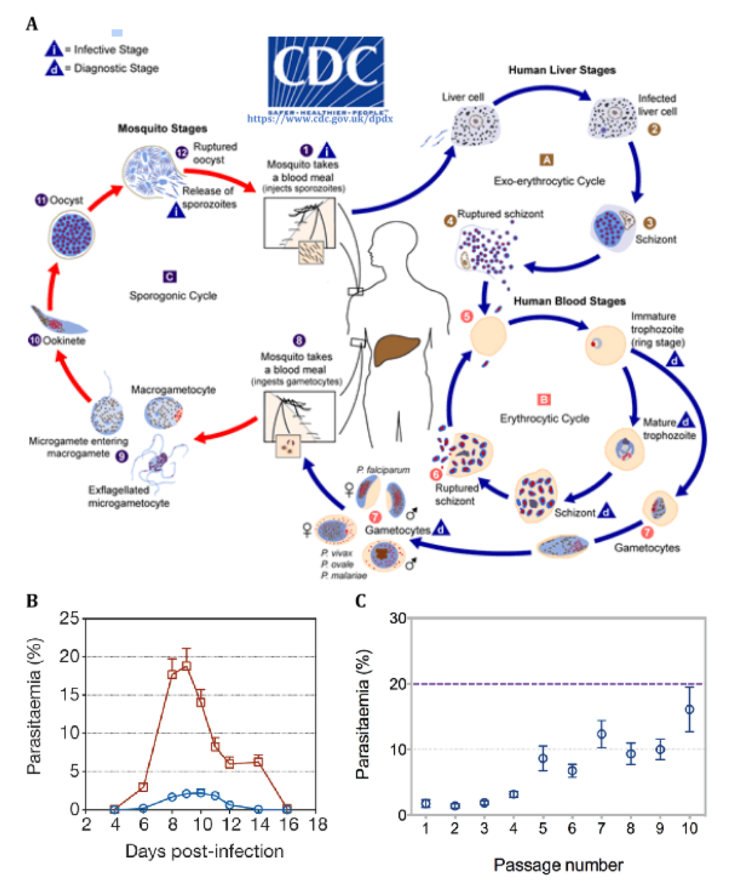
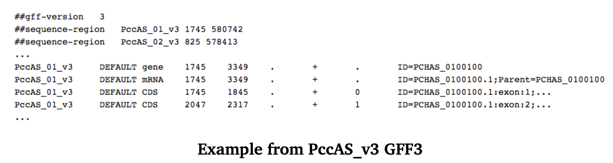
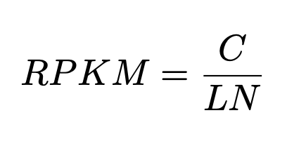

Exercises
RNA-Seq expression analysis
Introduction
RNA sequencing (RNA-Seq) is a high-throughput method used to profile the transcriptome, quantify gene expression and discover novel RNA molecules. This tutorial uses RNA sequencing of malaria parasites to walk you through transcriptome visualisation, performing simple quality control checks and will show you how to profile transcriptomic differences by identifying differentially expressed genes.
For an introduction to RNA-Seq principles and best practices see:
A survey of best practices for RNA-Seq data analysis, Ana Conesa, Pedro Madrigal, Sonia Tarazona, David Gomez-Cabrero, Alejandra Cervera, Andrew McPherson, Michał Wojciech Szcześniak, Daniel J. Gaffney, Laura L. Elo, Xuegong Zhang and Ali Mortazavi, Genome Biol. 2016 Jan 26;17:13 doi:10.1186/s13059-016-0881-8
Tutorial sections
This tutorial comprises the following sections:
1. Introducing the tutorial dataset
2. Mapping RNA-Seq reads to the genome with HISAT2
3. Visualising transcriptomes with IGV
4. Transcript quantification with Kallisto
5. Identifying differentially expressed genes with Sleuth
6. Interpreting the results
7. Key aspects of differential expression analysis
In this tutorial, we are going to use the following software versions:
Prerequisites
This tutorial assumes that you have the following software or packages and their dependencies installed on your computer. The software or packages used in this tutorial may be updated from time to time so, we have also given you the version which was used when writing the tutorial.
Where can I find the tutorial data?
You can find the data for this tutorial by typing the following command in a new terminal window.
cd /home/manager/course_data/rna_seq
Now, let’s head to the first section of this tutorial which will be introducing the tutorial dataset.
Introducing the tutorial dataset
Working through this tutorial, you will investigate the effect of vector transmission on gene expression of the malaria parasite. The dataset you will be using for this tutorial and Figure 1 have been taken from the following publication:
Spence, P., Jarra, W., Lévy, P. et al. Vector transmission regulates immune control of Plasmodium virulence. Nature 498, 228–231 (2013). https://doi.org/10.1038/nature12231

Is the transcriptome of a mosquito-transmitted parasite different from one which has not passed through a mosquito?
The key reason for asking this question is that parasites which are transmitted by mosquito (MT) are less virulent (severe/harmful) than those which are serially blood passaged (SBP) in the laboratory.
Figure 1A shows the malaria life cycle, the red part highlighting the mosquito stage.
Figure 1B shows the difference in virulence, measured by blood parasitemia (presence of parasites in the blood), between mosquito-transmitted and serially blood passaged parasites.
Figure 1C shows that increasing numbers of blood passage post mosquito transmission results in increasing virulence, back to around 20% parasitemia. Subsequent mosquito transmission of high virulence parasites render them low virulence again.
We hypothesise that parasites which have been through the mosquito are somehow better able to control the mosquito immune system than those which have not. This control of the immune system would result in lower parasitemia because this is advantageous for the parasite. Too high a parasitemia is bad for the mouse and therefore bad for the parasite.
Exercise 1
In this tutorial, you will be analysing five RNA samples, each of which has been sequenced on an Illumina HiSeq sequencing machine. There are two conditions: serially blood-passaged parasites (SBP) and mosquito transmitted parasites (MT). One with three biological replicates (SBP), one with two biological replicates (MT).
| Sample name | Experimental condition | Replicate number |
|---|---|---|
| MT1 | mosquito transmitted parasites | 1 |
| MT2 | mosquito transmitted parasites | 2 |
| SBP1 | serially blood-passaged parasites | 1 |
| SBP2 | serially blood-passaged parasites | 2 |
| SBP3 | serially blood-passaged parasites | 3 |
Check that you can see the tutorial FASTQ files in the data directory.
ls data/*.fastq.gz
The FASTQ files contain the raw sequence reads for each sample. There are four lines per read:
1. Header
2. Sequence
3. Separator (usually a ‘+’)
4. Encoded quality value
Take a look at one of the FASTQ files.
zless data/MT1_1.fastq.gz | head
Find out more about FASTQ formats at https://en.wikipedia.org/wiki/FASTQ_format.
Questions
2.3.1 Q1: Why is there more than one FASTQ file per sample?
Hint: think about why there is a MT1_1.fastq.gz and a MT1_2.fastq.gz
2.3.2 Q2: How many reads were generated for the MT1 sample?
Hint: we want the total number of reads from both files (MT1_1.fastq.gz and MT1_2.fastq.gz) so perhaps think about the FASTQ format and the number of lines for each read or whether there’s anything you can use in the FASTQ header to search and count…
Now let’s move on to mapping RNA-Seq reads to the genome using HISAT2.
Mapping RNA-Seq reads to the genome using HISAT2
Introduction
For this exercise, we have reduced the number of reads in each sample to around 2.5 million to reduce the mapping time. However, this is sufficient to detect most differentially expressed genes.
The objectives of this part of the tutorial are:
• use HISAT2 to build an index from the reference genome
• use HISAT2 to map RNA-Seq reads to the reference genome
Mapping RNA-Seq reads to a genome
By this stage, you should have already performed a standard NGS quality control check on your reads to see whether there were any issues with the sample preparation or sequencing. In the interest of time, we won’t be doing that as part of this tutorial, but feel free to use the tools from earlier modules to give that a go later if you have time.
Next, we map our RNA-Seq reads to a reference genome to get context. This allows you to visually inspect your RNA-Seq data, identify contamination, novel exons and splice sites as well as giving you an overall feel for your transcriptome.
HISAT2
To map the RNA-Seq reads from our five samples to the reference genome, we will be using HISAT2, a fast and sensitive splice-aware aligner. HISAT2 compresses the genome using an indexing scheme based on the Burrows-Wheeler transform (BWT) and Ferragina-Manzini (FM) index to reduce the amount of space needed to store the genome. This also makes the genome quick to search, using a whole-genome FM index to anchor each alignment and then tens of thousands local FM indexes for very rapid extensions of these alignments.
For more information, and to find the original version of Figure 2, please see the HISAT paper:
HISAT2 is a splice-aware aligner which means it takes into account that when a read is mapped it may be split across multiple exons with (sometimes large) intronic gaps between aligned regions.

As you can see in Figure 2, HISAT2 splits read alignments into five classes based on the number of exons the read alignment is split across and the length of the anchor (longest continuously mapped portion of a split read):
• Aligns to a single exon (M)
• Alignment split across 2 exons with long anchors over 15bp (2M_gt_15)
• Alignment split across 2 exons with intermediate anchors between 8bp and 15bp (2M_8_15)
• Alignment split across 2 exons with short anchors less than 7bp (2M_1_7)
• Alignment split across more than 2 exons (gt_2M)
HISAT2 used the global index to place the longest continuously mapped portion of a read (anchor).
This information is then used to identify the relevant local index. In most cases, HISAT2 will only need to use a single local index to place the remaining portion of the read without having to search the rest of the genome.
For the human genome, HISAT2 will build a single global index and 48,000 local FM indexes. Each of the local indexes represents a 64kb genomic region. The majority of human introns are significantly shorter than 64kb, so >90% of human introns fall into a single local index. Moreover, each of the local indexes overlaps its neighbour by ~1kb which means that it also has the ability to detect reads spanning multiple indexes.
Figure 2. Read types and their relative proportions from 20 million simulated 100-bp reads
There are five HISAT2 RNA-seq read mapping categories: (i) M, exonic read; (ii) 2M_gt_15, junction reads with long, >15-bp anchors in both exons; (iii) 2M_8_15, junction reads with intermediate, 8- to 15-bp anchors; (iv) 2M_1_7, junction reads with short, 1- to 7-bp, anchors; and (v) gt_2M, junction reads spanning more than two exons (Figure 2A). Exoninc reads span only a single exon and represent over 60% of the read mappings in the 20 million 100-bp simulated read dataset.
Exercise 2
Be patient, each of the following steps will take a couple of minutes!
Look at the usage instructions for hisat2-build.
hisat2-build -h
This not only tells us the version of HISAT2 we’re using (essential for publication methods):
HISAT2 version 2.1.0 by Daehwan Kim
But, that we also need to give histat2-build two pieces of information:
Usage: hisat2-build [options]* <reference_in> <ht2_index_base>
These are:
• <reference_in> location of our reference sequence file (PccAS_v3_genome.fa)
• <ht2_index_base> what we want to call our HISAT2 index files (PccAS_v3_hisat2.idx)
Build a HISAT2 index for our Plasmodium chabaudi chabaudi AS (P. chabaudi) reference genome using hisat2-build.
hisat2-build data/PccAS_v3_genome.fa data/PccAS_v3_hisat2.idx
You can see the generated index files using:
ls data/PccAS_v3_hisat2.idx*
Look at the usage for hisat2.
hisat2 -h
Here we can see that hisat2 needs several bits of information so that it can do the mapping:
hisat2 [options]* -x <ht2-idx> {-1 <m1> -2 <m2> | -U <r>} [-S <sam>]
• -x <ht2-idx> the prefix that we chose for our index files with hisat2-build (PccAS_v3_hisat2.idx)
• {-1 <m1> -2 <m2> | -U <r>} the left (-1) and right (-2) read files for the sample (MT1_1.fastq and MT1_2.fastq respectively
• [-S <sam>] the name of the file we want to write the output alignment to (MT1.sam) as, by default, hisat2 will print the results to the terminal (stdout)
We will also be adding one more piece of information, the maximum intron length (default 500,000 bases). For this analysis, we want to set the maximum intron length to 10,000. We can do this by adding the option –max-intronlen 10000.
Map the reads for the MT1 sample using HISAT2.
hisat2 --max-intronlen 10000 -x data/PccAS_v3_hisat2.idx -1 data/MT1_1.fastq.gz -2 data/MT1_2.fastq.gz -S data/MT1.sam
HISAT2 has written the alignment in SAM format. This is a format which allows humans to look at our alignments. However, we need to convert the SAM file to its binary version, a BAM file. We do this for several reasons. Mainly we do it because most downstream programs require our alignments to be in BAM format and not SAM format. However, we also do it because the BAM file is smaller and so takes up less (very precious!) storage space. For more information, see the format guide:
http://samtools.github.io/hts-specs/SAMv1.pdf.
Convert the SAM file to a BAM file.
samtools view -b -o data/MT1.bam data/MT1.sam
We now need to sort the BAM file ready for indexing. When we aligned our reads with HISAT2, alignments were produced in the same order as the sequences in our FASTQ files. To index the BAM file, we need the alignments ordered by their respective positions in the reference genome. We can do this using samtools sort to sort the alignments by their co-ordinates for each chromosome.
Sort the BAM file.
samtools sort -o data/MT1_sorted.bam data/MT1.bam
Next, we need to index our BAM file. This makes searching the alignments much more efficient.
It allows programs like IGV (which we will be using to visualise the alignment) to quickly get the alignments that overlap the genomic regions you’re looking at. We can do this with samtools index which will generate an index file with the extension .bai.
Index the BAM file so that it can be read efficiently by IGV.
samtools index data/MT1_sorted.bam
Now, repeat this process of mapping, converting (SAM to BAM), sorting and indexing with the reads from the MT2 sample. You can run the previous steps as a single command.
hisat2 –max-intronlen 10000 -x data/PccAS_v3_hisat2.idx -1 data/MT2_1.fastq.gz -2 data/MT2_2.fastq.gz | samtools view -b -| samtools sort -o data/MT2_sorted.bam - && samtools index data/MT2_sorted.bam
Let’s not forget our SBP samples. We’ve already provided the BAM files for these samples.
Please check that you can see the BAM files before continuing.
ls -al data/SBP*.bam
You should see three files:
data/SBP1_sorted.bam
data/SBP2_sorted.bam
data/SBP3_sorted.bam
If you can’t see these files, please let your instructor know!
We’ve previously shown you how to run HISAT2 and samtools with individual and one-line commands. For the SBP samples, a bash script was used to generate our genome alignments prior to this tutorial.
To take a look at the script you can run:
less data/map_SBP_samples.sh
If you have time at the end of the tutorial, feel free to take a closer look at the script and a more detailed breakdown of what it does in Running commands on multiple samples. Bash scripts and loops are a useful way of automating an analysis and running the same commands for multiple samples. Imagine if you had 50 samples and not 5! In truth, you’d probably want to run that many samples on a compute cluster, in parallel. But that’s outside the scope of this tutorial.
Questions
3.3.1 Q1: How many index files were generated when you ran hisat2-build?
Hint: look for the files with the .ht2 extension
3.3.2 Q2: What was the overall alignment rate for each of the MT samples (MT1 and MT2) to the reference genome?
Hint: look at the the output from the hisat2 commands
3.3.3 Q3: How many MT1 and MT2 reads were not aligned to the reference genome?
Hint: look at the the output from the hisat2 commands, you’re looking for reads (not read pairs) which have aligned 0 times (remember that one read from a pair may map even if the other doesn’t)
Visualising transcriptomes with IGV
Introduction
Integrative Genome Viewer (IGV) allows us to visualise genomic datasets. We have provided a quick start guide which contains the information you need to complete Exercise 3. There is also an IGV user guide online which contains more information on all of the IGV features and functions: http://software.broadinstitute.org/software/igv/UserGuide.
The objectives of this part of the tutorial are:
• load a reference genome into IGV and navigate the genome
• load an annotation file into IGV and explore gene structure
• load read alignments into IGV and inspect read alignments
Exercise 3
First, we will use samtools to create an index for the P. chabaudi reference genome, which IGV will use to traverse the genome. This index file will have the extension .fai and should always be in the same directory as the reference genome.
First, index the genome fasta file (required by IGV).
samtools faidx data/PccAS_v3_genome.fa
Now, start IGV.
igv &
This will open the IGV main window. Now, we need to tell IGV which genome we want to use. IGV has many pre-loaded genomes available, but P. chabaudi is not one of them. This means we will need to load our genome from a file.
Load your reference genome into IGV. Go to “Genomes -> Load Genome from File…”. Select “PccAS_v3_genome.fa” and click “Open”. For more information, see Loading a reference genome in our quick start guide.
We not only want to see where our reads have mapped, but what genes they have mapped to. For this, we have an annotation file in GFF3 format. This contains a list of features, their co-ordinates and orientations which correspond to our reference genome.

Load your annotation file into IGV. Go to ”“File -> Load from File…”. Select “PccAS_v3.gff3” and click “Open”. For more information, see Loading gene annotations in our quick start guide.
This will load a new track called “PccAS_v3.gff3”. The track is currently shown as a density plot.
You will need to zoom in to see individual genes.
Search for the gene PCHAS_0505200 by typing “PCHAS_0505200” in the search box to zoom in and centre the view on PCHAS_0505200.

To get a clearer view of the gene structure, right click on the annotation track and click “Expanded”.

In the annotation track, genes are presented as blue boxes and lines. These boxes represent exons, while the lines represent intronic regions. Arrows indicate the direction (or strand) of transcription for each of the genes. Now we have our genome and its annotated features, we just need the read alignments for our five samples.
Load your alignment file for the MT1 sample into IGV. Go to ”“File -> Load from File…”. Select “MT1_sorted.bam” and click “Open”. For more information, see Loading alignment files in our quick start guide.
Note: BAM files and their corresponding index files must be in the same directory for IGV to load them properly.

This will load a new track called “MT1_sorted.bam” which contains the read alignments for the MT1 sample. We can change how we visualise our data by altering the view options. By default, IGV will display reads individually so they are compactly arranged. If you were to hover over a read in the default view, you will only get the details for that read. However, if we change our view so that the reads are visualised as pairs, the read pairs will be joined together by line and when we hover over either of the reads, we will get information about both of the reads in that pair.
To view our reads as pairs, right click on the MT1_sorted.bam alignment track and click “View as pairs”.

To condense the alignment, right click on the MT1_sorted.bam alignment track and click “Squished”.

For more information on sorting, grouping and visualising read alignments, see the IGV user guide.
Load the remaining sorted BAM files for the MT2 sample and the three SBP samples.
Using the search box in the toolbar, go to PCHAS_1409500. For more information, see Jump to gene or locus in our quick start guide.

The first thing to look at is the coverage range for this viewing window on the left-hand side. The three SBP samples have 2-3 times more reads mapping to this gene than the two MT samples. While at first glance it may seem like this gene may be differentially expressed between the two conditions,
remember that some samples may have been sequenced to a greater depth than others. So, if a
sample has been sequenced to a greater depth we would expect more reads to map in general.

From the gene annotation at the bottom we can also see that there are three annotated exon/CDS features for this gene. However, the coverage plot suggests there may be a fourth unannotated exon which, given the direction of the gene, could suggest a 5’ untranslated region (UTR). Note the clean drop off of the coveraged at around position 377,070.
Questions
4.3.1 Q1: How many CDS features are there in “PCHAS_1402500”?
Hint: Look at Jump to gene or locus in our quick start guide.
4.3.2 Q2: Does the RNA-seq mapping agree with the gene model in blue?
Hint: Look at the coverage track and split read alignments.
4.3.3 Q3: Do you think this gene is differentially expressed and is looking at the coverage
plots alone a reliable way to assess differential expression?
Hint: Look at the coverage similarities/differences between the MT and SBP samples.
Transcript quantification with Kallisto
Introduction
After visually inspecting the genome alignment, the next step in a typical RNA-Seq analysis is to estimate transcript abundance. To do this, reads are assigned to the transcripts they came from. These assignments are then used to quantify gene or transcript abundance (expression level).
For this tutorial, we are using Kallisto to assign reads to a set of transcript sequences and quantify transcript abundance. Kallisto does not assemble transcripts and cannot identify novel isoforms. So, when a reference transcriptome isn’t available, the transcripts will need to be assembled de novo from the reads. However, for this tutorial, we already have a reference transcriptome available.
The objectives of this part of the tutorial are:
• use Kallisto to index a transcriptome
• use Kallisto to estimate transcript abundance
Quantifying transcripts with Kallisto
Many of the existing methods used for estimating transcript abundance are alignment-based. This means they rely on mapping reads onto the reference genome. The gene expression levels are then calculated by counting the number of reads overlapping the transcripts. However, read alignment is a computationally and time intensive process. So, in this tutorial, we will be running Kallisto which uses a fast, alignment-free method for transcript quantification.

Kallisto uses pseudoalignment to make it efficient. Rather than looking at where the reads map, Kallisto uses the compatibility between the reads and transcripts to estimate transcript abundance.
Thus, most transcript quantification with Kallisto can be done on a simple laptop (Figure 3).
Step 1: building a Kallisto index As with alignment-based methods, Kallisto needs an index. To generate the index, Kallisto first builds a transcriptome de Bruijn Graph (T-BDG) from all of the k-mers (short sequences of k nucleotides) that it finds in the transcriptome. Each node in the graph corresponds to a k-mer and each transcript is represented by its path through the graph. Using these paths, each k-mer is assigned a k-compatibility class. Some k-mers will be redundant i.e. shared by the same transcripts. These are skipped to make the index compact and quicker to search. A great worked example of this process can be found here.
The command kallisto index can be used to build a Kallisto index from transcript sequences.
kallisto index
Here we can see the version of Kallisto that we’re using (useful for publication methods) and the information that we’ll need to give kallisto index. The only information we need to give kallisto index is the location of our transcript sequences (PccAS_v3_transcripts.fa). However, it’s useful to have a meaningful filename for the resulting index. We can add this by using the option -i which expects a value, our index prefix (PccAS_v3_kallisto).
Step 2: estimating transcript abundance With this Kallisto index, you can use kallisto quantto estimate transcript abundances. You will need to run this command separately for each sample.
kallisto quant
We can see that kallisto quant needs us to tell it where our sample read are. Although we don’t have to, it’s usually a good idea to keep the results of each quantification in a different directory. This is because the output filename are always the same (e.g. abundances.tsv). If we ran a second analysis, these could get overwritten. To use a different output directory, we can use the -o option. We will also be using the -b option for bootstrapping.
Bootstrapping Not all reads will be assigned unambiguously to a single transcript. This means there will be “noise” in our abundance estimates where reads can be assigned to multiple transcripts. Kallisto quantifies the uncertainty in its abundance estimates using random resampling and replacement. This process is called bootstrapping and indicates how reliable the expression estimates are from the observed pseudoalignment. Bootstrap values can be used downstream to distinguish the technical variability from the biological variability in your experiment.
Exercise 4
Build an index called PccAS_v3_kallisto from transcript sequences in PccAS_v3_transcripts.fa.
kallisto index -i data/PccAS_v3_kallisto data/PccAS_v3_transcripts.fa
Quantify the transcript expression levels for the MT1 sample with 100 bootstrap samples and calling the output directory MT1.
kallisto quant -i data/PccAS_v3_kallisto -o data/MT1 -b 100 data/MT1_1.fastq.gz data/MT1_2.fastq.gz
You’ll find your Kallisto results in a new output directory which we called MT1. Let’s take a look.
ls data/MT1
Running kallisto quant generated three output files in our MT1 folder:
• abundance.h5
HDF5 binary file containing run info, abundance esimates, bootstrap estimates, and transcript length information length.
• abundance.tsv
Plain text file containing abundance estimates (doesn’t contain bootstrap estimates).
• run_info.json
JSON file containing information about the run.
Note: when the number of bootstrap values (-b) is very high, Kallisto will generate a large amount of data. To help, it outputs bootstrap results in HDF5 format (abundance.h5). This file can be read directly by sleuth.
In the MT1/abundance.tsv file we have the abundance estimates for each gene for the MT1 sample.
Let’s take a quick look.
head data/MT1/abundance.tsv
In MT1/abundance.tsv there are five columns which give us information about the transcript abundances for our MT1 sample.
• target_id
Unique transcript identifier.
• length
Number of bases found in exons.
• eff_length
Effective length. Uses fragment length distribution to determine the effective number of positions that can be sampled on each transcript.
• est_counts
Estimated counts*. This may not always be an integer as reads which map to multiple tran-
scripts are fractionally assigned to each of the corresponding transcripts.
• tpm
Transcripts per million. Normalised value accounting for length and sequence depth bias.
In the last column we have our normalised abundance value for each gene. These are our transcripts per million or TPM. If you have time at the end of this tutorial, see our normalisation guide which covers common normalisation methods and has a bonus exercise.
To get the result for a specific gene, we can use grep.
grep PCHAS_0100100 data/MT1/abundance.tsv
If we wanted to get the TPM value for a particular gene, we can use awk.
awk -F"\t" '$1=="PCHAS_0100100" {print $5}' data/MT1/abundance.tsv
Use kallisto quant four more times, for the MT2 sample and the three SBP samples.
Questions
5.3.1 Q1: What k-mer length was used to build the Kallisto index?
Hint: look at the terminal output from kallisto index
5.3.2 Q2: How many transcript sequences are there in PccAS_v3_transcripts.fa?
Hint: you can use grep or look at the terminal output from kallisto quant or in the run_info.json files
5.3.3 Q3: What is the transcripts per million (TPM) value for PCHAS_1402500 in each of the samples?
Hint: use grep to look at the abundance.tsv files
5.3.4 Q4: Do you think PCHAS_1402500 is differentially expressed?
Identifying differentially expressed genes with Sleuth
Introduction
In the previous sections, we have quantified our transcript abundance and looked at why counts are normalised. In this section, you will be using sleuth to do some simple quality checks and get a first look at the results.
The objectives of this part of the tutorial are:
• use sleuth to perform quality control checks
• use sleuth to identify differentially expressed (DE) transcripts
• use sleuth to investigate DE transcripts
Differential expression analysis (DEA)
Differential expression analysis tries to identify genes whose expression levels differ between experimental conditions. We don’t normally have enough replicates to do traditional tests of significance for RNA-Seq data. So, most methods look for outliers in the relationship between average abundance and fold change and assume most genes are not differentially expressed.
Rather than just using a fold change threshold to determine which genes are differentially expressed, DEAs use a variety of statistical tests for significance. These tests give us a p-value which is an estimate of how often your observations would occur by chance.
However, we perform these comparisons for each one of the thousands of genes/transcripts in our dataset. A p-value of 0.01 estimates a probability of 1% for seeing our observation just by chance. In an experiment like ours with 5,000 genes we would expect 5 genes to be significantly differentially expressed by chance (i.e. even if there were no difference between our conditions). Instead of using a p-value we use a q-value to account for multiple testing and adjusts the p-value accordingly.
sleuth
sleuth is a companion tool for Kallisto. Unlike most other tools, sleuth can utilize the technical variation information generated by Kallisto so that you can look at both the technical and biological variation in your dataset.
For the DEA, sleuth essentially tests two models, one which assumes that the abundances are equal between the two conditions (reduced) and one that does not (full). To identify DE transcripts it identifies those with a significantly better fit to the “full” model. For more information on sleuth and how it works, see Lior Pachter’s blog post A sleuth for RNA-Seq (https://liorpachter.word-press.com/2015/08/17/a-sleuth-for-rna-seq/). sleuth is written in the R statistical programming language, as is almost all RNA-Seq analysis software. Helpfully, it produces a web page that allows interactive graphical analysis of the data. However, we strongly recommend learning R for anyone doing a significant amount of RNA-seq analysis.
It is nowhere near as hard to get started with as full-blown programming languages such as Perl or Python!
Exercise 5
For this tutorial, we’ve provided a series of R commands as an R script that will get sleuth running.
Running sleuth
The commands we need to run sleuth are in the file sleuth.R. There’s a great overview of the commands and what they do by the developers of sleuth here: https://pachterlab.github.io/sleuth_walk-throughs/trapnell/analysis.html. Using R is not as hard as it seems, most of this script was copied from the manual!
Open sleuth.R and have a quick look at the commands.
cat data/sleuth.R
You may also want to have a look at hiseq_info.txt which is where we define which condition each sample is associated with.
cat data/hiseq_info.txt
You can run scripts containing R commands using Rscript followed by the script name. Run sleuth.R.
Rscript data/sleuth.R
You won’t see any output from this script in the notebook, just a * next to the command input ([*]) to let you know it’s running.
If you were to run the script directly on the command line, sleuth will return a link which you can follow (http://127.0.0.1:42427). This will take you to a web page where you can navigate and explore the sleuth results.
Type the URL below into your a web browser (e.g. chrome or firefox) to open the sleuth results.
http://127.0.0.1:42427
You should now see a page with the heading “sleuth live”. If not, just give the script a little longer and then refresh the page.
Using sleuth to quality check (QC) transcript quanification
Quality control checks are absolutely vital at every step of the experimental process. We can use sleuth to perform simple quality checks (QC) on our dataset.
At the top of the page, sleuth provides several tabs which we can use to determine whether the data is of good quality and whether we should trust the results we get.
First, lets take a look at a summary of our dataset.
In the web page that has been launched, click on “summaries -> processed data”.
Notice that the number of reads mapping differs quite a bit between MT and SBP samples? This is why we QC our data. In the MT samples >95% of the reads mapped to the genome, but only 15-30% are assigned to the transcriptome compared to >75% for the SBP samples. This suggests that there may be some residual ribosomal RNA left over from the RNA preparation. It’s not a problem as we have enough reads and replicates for our analysis.

In some cases, we can identify samples which don’t agree with other replicates (outliers) and samples which are related by experimental bias (batch effects). If we don’t have many replicates, it’s hard to detect outliers and batch effects meaning our power to detect DE genes is reduced.
Principal component analysis (PCA) plots can be used to look at variation and strong patterns within the dataset. Batch effects and outliers often stand out quite clearly in the PCA plot and mean that you can account for them in any downstream analysis.

Our samples form two condition-related clusters with the two MT samples (red) on the left and the three SBP samples on the right (blue). If we look at the variance bar plot, we can see that the first principal component (PC1) accounts for >90% of the variation in our dataset. As the samples are clearly clustered on the x-axis (PC1) this suggests that most of the variation in the dataset is related to our experimental condition (Mt vs SBP).

Using sleuth to look at DE transcripts
We used the output from Kallisto to identify DE transcripts using sleuth. Let’s take a look and see if we found any.
To see the results of the sleuth DEA, go to “analyses -> test table”.

The important columns here are the q-value and the beta value (analagous to fold change). By default, the table is sorted by the q-value. We can see that our top transcript is PCHAS_0420800, a hypothetical protein/pseudogene. Now let’s take a closer look at that transcript.
Go to “analyses -> transcript view”. Enter “PCHAS_0420800” into the “transcript” search box. Click “view”.

On the left you have the abundances for the MT replicates and on the right, the SBP replicates. We can see that this transcript is more highly expressed in the MT samples than in the SBP samples. This is also reflected by the fold change in the test table (b = -4.5). The b value is negative as it represents the fold change in SBP samples relative to those in the MT samples.
Finally, let’s take a look at the gene level.
To see the results of the sleuth DEA, go to “analyses -> test_table”. Under “table type” select “gene table”. Click on the column header “qval” in the table to sort the rows by ascending q-value.

The transcripts have now been grouped by their descriptions. Let’s take a closer look at the CIR proteins.
Go to “analyses -> gene view”. In the “gene” search box enter “CIR protein” (without the quotes).

Here we can see the individual CIR protein transcript abundances. We can see that PCHAS_1100300 is more highly expressed in the SBP samples while PCHAS_0302100 and PCHAS_0302100 are more highly expressed in the MT samples.
Questions
6.3.1 Q1: Is our gene from earlier, PCHAS_1402500, significantly differentially expressed?
Interpreting the results
Introduction
The main objective of this part of the tutorial is to use simple Unix commands to get a list of significantly differentially expressed genes. Using this gene list and the quantitative information from our analysis we can then start to make biological inferences about our dataset.
Using the R script (sleuth.R), we printed out a file of results describing the differentially expressed genes in our dataset. This file is called kallisto.results.
The file contains several columns, of which the most important are:
• Column 1: target_id (gene id)
• Column 2: description (some more useful description of the gene than its id)
• Column 3: pval (p value)
• Column 4: qval (p value corrected for multiple hypothesis testing)
• Column 5: b (fold change)
With a little Linux magic we can get the list of differentially expressed genes with only the columns
of interest as above.
Exercise 6
To get the genes which are most highly expressed in our SBP samples, we must first filter our results. There are two columns we want to filter our data on: b (column 5) and qval (column 4).
These columns represent whether the gene is differentially expressed and whether that change is significant.
The following command will get those genes which have an adjusted p value (qval) less than 0.01 and a positive fold change. These genes are more highly expressed in the SBP samples.
awk -F "\t" '$4 < 0.01 && $5 > 0' data/kallisto.results | cut -f1,2,3,4,5 | head
We used awk to filter the gene list and print only the lines which met our search criteria (qval > 0.01, b > 0). The option -F tells awk what delimiter is used to separate the columns. In this case, it was a tab or its regular expression ””. We then use cut to only print out columns 1-5. You can also do that within the awk command. Finally, we use head to get the first 10 lines of the output.
Alternatively, we can look for the genes which are more highly expressed in the MT samples.
awk -F "\t" '$4 < 0.01 && $5 < 0' data/kallisto.results | cut -f1,2,3,4,5 | head
It can be useful to have a quick look and compare gene lists. For example, whether a certain gene product is seen more often in the genes most highly expressed in one condition or another. A quick and dirty method would be to use the gene descriptions (or gene products).
You could extract the gene products (column 2) for genes which are more highly expressed in the SBP samples using sort and then uniq.
awk -F "\t" '$4 < 0.01 && $5 < 0 {print $2}' data/kallisto.results | sort | uniq
We can count each time these unique gene products occur in the list using uniq -c.
awk -F "\t" '$4 < 0.01 && $5 < 0 {print $2}' data/kallisto.results | \
sort | uniq -c
And, if we wanted to make it a bit easier to see commonly found gene products we can sort this again by the frequency count we got from the uniq command. The sort command will put these in ascending numerical (-n) order.
awk -F "\t" '$4 < 0.01 && $5 < 0 {print $2}' data/kallisto.results | sort | uniq -c | sort -n
If you wanted to look for the frequency of a particular gene product you could also use grep.
awk -F "\t" '$4 < 0.01 && $5 < 0 {print $2}' data/kallisto.results | grep -c CIR
Or building on the earlier command:
awk -F "\t" '$4 < 0.01 && $5 < 0 {print $2}' data/kallisto.results | sort | uniq -c | grep CIR
If you want to read more about this work related to this data it is published:
Q1: How many genes are more highly expressed in the SBP samples?
Hint: try replacing head in the earlier command with another unix command to count the number of
7.2.2 Q2: How many genes are more highly expressed in the MT samples?
Hint: try replacing head in the earlier command with another unix command to count the number of lines
7.2.3 Q3: Do you notice any particular genes that came up in the analysis?
Hint: look for gene products that are seen more often in genes more highly expressed in the SBP samples than those more highly expressed in the MT samples
Key aspects of differential expression analysis
Replicates and power
In order to accurately ascertain which genes are differentially expressed and by how much it is necessary to use replicated data. As with all biological experiments doing it once is simply not enough.
There is no simple way to decide how many replicates to do, it is usually a compromise of statistical power and cost. By determining how much variability there is in the sample preparation and sequencing reactions, we can better assess how highly genes are really expressed and more accurately determine any differences. The key to this is performing biological rather than technical replicates.
This means, for instance, growing up three batches of parasites, treating them all identically, extracting RNA from each and sequencing the three samples separately. Technical replicates, whereby the same sample is sequenced three times do not account for the variability that really exists in biological systems or the experimental error between batches of parasites and RNA extractions.
Note: more replicates will help improve power for genes that are already detected at high levels, while deeper sequencing will improve power to detect differential expression for genes which are expressed at low levels.
p-values vs. q-values
When asking whether a gene is differentially expressed we use statistical tests to assign a p-value. If a gene has a p-value of 0.05, we say that there is only a 5% chance that it is not really differentially expressed. However, if we are asking this question for every gene in the genome (~5500 genes for Plasmodium), then we would expect to see p-values less than 0.05 for many genes even though they are not really differentially expressed. Due to this statistical problem, we must correct the p-values so that we are not tricked into accepting a large number of erroneous results. Q-values are p-values which have been corrected for what is known as multiple hypothesis testing. Therefore, it is a q-value of less than 0.05 that we should be looking for when asking whether a gene is differentially expressed.
Alternative software
If you have a good quality genome and genome annotation such as for model organisms e.g. human, mouse, Plasmodium; map to the transcriptome to determine transcript abundance. This is even more relevant if you have variant transcripts per gene as you need a tool which will do its best to determine which transcript is really expressed. As well as Kallisto (Bray et al. 2016; PMID: 27043002), there is eXpress (Roberts & Pachter, 2012; PMID: 23160280) which will do this.
Alternatively, you can map to the genome and then call abundance of genes, essentially ignoring variant transcripts. This is more appropriate where you are less confident about the genome annotation and/or you don’t have variant transcripts because your organism rarely makes them or they are simply not annotated. Tophat2 (Kim et al., 2013; PMID: 23618408), HISAT2 (Pertea et al. 2016; PMID: 27560171), STAR (Dobinet al., 2013; PMID: 23104886) and GSNAP (Wu & Nacu, 2010; PMID: 20147302) are all splice-aware RNA-seq read mappers appropriate for this task. You then need to use a tool which counts the reads overlapping each gene model. HTSeq (Anders et al., 2015; PMID: 25260700) is a popular tool for this purpose. Cufflinks (Trapnell et al. 2012; PMID:22383036) will count reads and determine differentially expressed genes.
There are a variety of programs for detecting differentially expressed genes from tables of RNA-seq read counts. DESeq2 (Love et al., 2014; PMID: 25516281), EdgeR (Robinson et al., 2010; PMID: 19910308) and BaySeq (Hardcastle & Kelly, 2010; PMID: 20698981) are good examples.
What do I do with a gene list?
Differential expression analysis results are a list of genes which show differences between two conditions. It can be daunting trying to determine what the results mean. On one hand, you may find that that there are no real differences in your experiment. Is this due to biological reality or noisy data? On the other hand, you may find several thousands of genes are differentially expressed.
What can you say about that?
Other than looking for genes you expect to be different or unchanged, one of the first things to do is look at Gene Ontology (GO) term enrichment. There are many different algorithms for this, but you could annotate your genes with functional terms from GO using for instance Blast2GO (Conesa et al., 2005; PMID: 16081474) and then use TopGO (Alexa et al., 2005; PMID: 16606683) to determine whether any particular sorts of genes occur more than expected in your differentially expressed genes.
Normalisation
Introduction
In the previous section, we looked at estimating transcript abundance with Kallisto. The abundances are reported as transcripts per million (TPM), but what does TPM mean and how is it calculated?
The objectives of this part of the tutorial are:
• understand why RNA-Seq normalisation metrics are used
• understand the difference between RPKM, FPKM and TPM
• calculate RPKM and TPM for a gene of interest
There are many useful websites, publications and blog posts which go into much more detail about RNA-Seq normalisation methods. Here are just a couple (in no particular order):
• What the FPKM? A review of RNA-Seq expression units
• RPKM, FPKM and TPM, clearly explained
• A survey of best practices for RNA-seq data analysis
• The RNA-seq abundance zoo
Why do we use normalisation units instead of raw counts?
Raw reads counts are the number of reads originating from each transcript which can be affected by several factors:
• sequencing depth (total number of reads)
The more we sequence a sample, the more reads we expect to be assigned.
• gene/transcript length
The longer the gene or transcript, the more reads we expect to be assigned to it.

Look at the top part of Figure 4. In which sample, X or Y, is the gene more highly expressed?
Neither, it’s the same in both. What we didn’t tell you was that the total number of reads generated for sample A was twice the number than for sample B. That meant almost twice the number of reads are assigned to the same gene in sample A than in sample B.
Look at the bottom part of Figure 4. Which gene, X or Y, has the greatest gene level expression?
Neither, they are both expressed at the same level. This time we didn’t tell you that gene X is twice the length of gene Y. This meant that almost twice the number reads were assigned to gene X than gene Y.
In the top part of Figure 4, the gene in sample X has twice the number of reads assigned to it than the same gene in sample Y. What isn’t shown is that sample X had twice the number or total reads than sample Y so we would expect more reads to be assigned in sample X. Thus, the gene is expressed at roughly the same level in both samples. In the bottom part of Figure 4, gene X has twice the number of reads assigned to it than gene Y. However, gene X is twice the length of gene Y and so we expect more reads to be assigned to gene X. Again, the expression level is roughly the same.
Reads per kilobase per million (RPKM)
Reads per kilobase (of exon) per million (reads mapped) or RPKM is a within sample normalisation method which takes into account sequencing depth and length biases.
To calculate RPKM, you first normalise by sequencing depth and then by gene/transcript length.
1. Get your per million scaling factor
Count up the total number of reads which have been assigned (mapped) in the sample. Divide this number by 1,000,000 (1 million) to get your per million scaling factor (N).
2. Normalise for sequencing depth
Divide the number of reads which have been assigned to the gene or transcript (C) by the per million scaling factor you calculated in step 1. This will give you your reads per million (RPM).
3. Get your per kilobase scaling factor
Divide the total length of the exons in your transcript or gene in base pairs by 1,000 (1 thousand) to get your per kilobase scaling factor (L).
4. Normalise for length
Divide your RPM value from step 2 by your per kilobase scaling factor (length of the gene/-transcript in kilobases) from step 3. This will give you your reads per kilobase per million or RPKM.
This can be simplified into the following equation:

Where:
• C is number of reads mapped to the transcript or gene
• L is the total exon length of the transcript or gene in kilobases
• N is the total number of reads mapped in millions
Fragments per kilobase per million (FPKM)
Fragments per kilobase per million or FPKM is essentially the same as RPKM except that:
• RPKM is designed for single-end RNA-Seq experiments
• FPKM is designed for paired-end RNA-Seq experiments
In a paired-end RNA-Seq experiment, two reads may be assigned to a single fragment (in any orientation). Also, in some cases, only one of those reads will be assigned to a fragment (singleton).
The only difference between RPKM and FPKM is that FPKM takes into consideration that two reads may be assigned to the same fragment.
Transcripts per million (TPM)
Calculating the transcripts per million or TPM is a similar process to RPKM and FPKM. The main difference is that you will first normalise for length bias and then for sequencing depth bias. In a nutshell, we are swapping the order of normalisations.
1. Get your per kilobase scaling factor
Divide the total length of the exons in your transcript in base pairs by 1,000 (1 thousand) to get your per kilobase scaling factor.
2. Normalise for length
Divide the number of reads which have been assigned to the transcript by the per kilobase scaling factor you calculated in step 1. This will give you your reads per kilobase (RPK).
3. Get the sum of all RPK values in your sample
Calculate the RPK value for all of the transcripts in your sample. Add all of these together to get your total RPK value.
4. Get your per million scaling factor
Divide your total RPK value from step 3 by 1,000,000 (1 million) to get your per million scaling factor.
5. Normalise for sequencing depth
Divide your RPK value calculated in step 2 by the per million scaling factor from step 4. You
now have your transcripts per millions value or TPM.
Calculating RPKM and TPM values
To try and answer this, let’s look at a worked example. Here, we have three genes (A-C) and three biological replicates (1-3).
| Col1 | Col2 | Col3 | Col4 | Col5 |
|---|---|---|---|---|
| Gene | Length | Replicate 1 | Replicate 2 | Replicate 3 |
| A | 2,000 bases | 10 | 12 | 30 |
| B | 4,000 bases | 20 | 25 | 60 |
| C | 1,000 bases | 5 | 8 | 15 |
There are two things to notice in our dataset:
• Gene B has twice number reads mapped than gene A, possibly as it’s twice the length
• Replicate 3 has more reads mapped than any of the other replicates, regardless of which gene we look at
Calculating RPKM
Step 1: get your per million scaling factor In the table below is the total number of reads which mapped for each of the replicates. To get our per million scaling factor, we divide each of these values by 1,000,000 (1 million).
| Gene | Replicate 1 | Replicate 2 | Replicate 3 |
|---|---|---|---|
| Total reads mapped | 3,500,000 | 4,500,000 | 10,600,000 |
| Per million reads | 3.5 | 4.5 | 10.6 |
Step 2: normalise for sequencing depth factor to get our reads per million (RPM).
Before:
We now divide our read counts by the per million scaling
| Gene | Replicate 1 | Replicate 2 | Replicate 3 |
|---|---|---|---|
| A | 10 | 12 | 30 |
| B | 20 | 25 | 60 |
| B | 5 | 8 | 15 |
After:
| Gene | Replicate 1 | Replicate 2 | Replicate 3 |
|---|---|---|---|
| A | 2.857 | 2.667 | 2.830 |
| B | 5.714 | 5.556 | 5.660 |
| C | 1.429 | 1.778 | 1.415 |
Step 3: get your per kilobase scaling factor Here we have our gene length in base pairs. For our per kilobase scaling factor we need to get our gene length in kilobases by dividing it by 1,000.
| Gene | Length (base pairs) | Length (kilobases) |
|---|---|---|
| A | 2,000 | 2 |
| B | 4,000 | 4 |
| C | 1,000 | 1 |
Step 4: normalise for length Finally, we divide our RPM values from step 2 by our per kilobase scaling factor from step 3 to get our reads per kilobase per million (RPKM).
Before:
| Gene | Replicate 1 RPM | Replicate 2 RPM | Replicate 3 RPM |
|---|---|---|---|
| A | 2.857 | 2.667 | 2.830 |
| B | 5.714 | 5.556 | 5.660 |
| C | 1.429 | 1.778 | 1.415 |
After:
| Gene | Replicate 1 RPM | Replicate 2 RPM | Replicate 3 RPM |
|---|---|---|---|
| A | 1.43 | 1.33 | 1.42 |
| B | 1.43 | 1.39 | 1.42 |
| C | 1.43 | 1.78 | 1.42 |
Notice that even though replicate 3 had more reads assigned than the other samples and a greater sequencing depth, its RPKM is quite similar. And, that although gene B had twice the number of reads assigned than gene A, its RPKM is the same. This is because we have normalised by both length and sequencing depth.
Calculating TPM
Now we’re going to calculate the TPM values for the same example data. As a reminder, here are our three genes (A-C) and three biological replicates (1-3).
| Gene | Length | Replicate 1 | Replicate 2 | Replicate 3 |
|---|---|---|---|---|
| A | 2,000 bases | 10 | 12 | 30 |
| B | 4,000 bases | 20 | 25 | 60 |
| C | 1,000 bases | 5 | 8 | 15 |
Step 1: get your per kilobase scaling factor Again, our gene lengths are in base pairs. For our per kilobase scaling factor we need to get our gene length in kilobases by dividing it by 1,000.
| Gene | Length (base pairs) | Length (kilobases) |
|---|---|---|
| A | 2,000 | 2 |
| B | 4,000 | 4 |
| C | 1,000 | 1 |
Step 2: normalise for length Now we divide the number of reads which have been assigned to each gene by the per kilobase scaling factor we just calculated. This will give us our reads per kilobase (RPK).
Before:
| Gene | Replicate 1 | Replicate 2 | Replicate 3 |
|---|---|---|---|
| A | 10 | 12 | 30 |
| B | 20 | 25 | 60 |
| C | 5 | 8 | 15 |
After:
| Gene | Replicate 1 | Replicate 2 | Replicate 3 |
|---|---|---|---|
| A | 5 | 6 | 15 |
| B | 5 | 6.25 | 15 |
| C | 5 | 8 | 15 |
Step 3: get the sum of all RPK values in your sample Next, we sum the RPK values for each of our replices. This will give use our total RPK value for each replicate. To make this example scalable, we assume there are other genes so the total RPK is made up.
| Gene | Replicate 1 | Replicate 2 | Replicate 3 |
|---|---|---|---|
| A | 5 6 15 | ||
| B | 5 6.25 15 | ||
| C | 5 8 15 | ||
| … | |||
| Total RPK | 150,000 | 202,500 | 450,000 |
Step 4: get your per million scaling factor Here, instead of dividing our total mapped reads by 1,000,000 (1 million) to get our per million scaling factor, we divide our total RPK values by 1,000,000 (1 million).
| Gene | Replicate 1 | Replicate 2 | Replicate 3 |
| Total RPK | 150,000 | 202,500 | 450,000 |
| Per million RPK | 0.1500 | 0.2025 | 0.4500 |
Step 5: normalise for sequencing depth Finally, we divide our individual RPK values from step 2 by the per million scaling factor in step 4 to give us our TPM values.
Before:
| Gene | Replicate 1 | Replicate 2 | Replicate 3 |
|---|---|---|---|
| A | 5 | 6 | 15 |
| B | 5 | 6.25 | 15 |
| C | 5 | 8 | 15 |
After:
| Gene | Replicate 1 | Replicate 2 | Replicate 3 |
|---|---|---|---|
| A | 33.33 | 29.63 | 33.33 |
| B | 33.33 | 30.86 | 33.33 |
| C | 33.33 | 39.51 | 33.33 |
Which normalisation unit should I use?
There’s a lot of debate around this, so let’s look at our total normalised values for each replicate.
RPKM
| Gene | Replicate 1 RPKM | Replicate 2 RPKM | Replicate 3 RPKM |
|---|---|---|---|
| A | 1.43 | 1.33 | 1.42 |
| B | 1.43 | 1.39 | 1.42 |
| C | 1.43 | 1.78 | 1.42 |
| Total RPKM | 4.29 | 4.50 | 4.25 |
TPM
| Gene | Replicate 1 | Replicate 2 | Replicate 3 |
|---|---|---|---|
| A | 33.33 | 29.63 | 33.33 |
| B | 33.33 | 30.86 | 33.33 |
| C | 33.33 | 39.51 | 33.33 |
| Total TPM | 100 | 100 | 100 |
Notice that that total TPM value for each of the replicates is the same. This is not true for RPKM and FPKM where the total values differ. With TPM, having the same total value for each replicate makes it easier to compare the proportion of reads mapping to each gene across replicates (although you shouldn’t really compare across experiments). With RPKM and FPKM, the differing total values make it much harder to compare replicates.
Questions
Below is the information for each of the five samples. You will need this information to answer the questions. We have put all of commands used to get this information in the answers.
| Sample | Total mapped reads | Transcript length | Assigned reads | Total RPK |
| MT1 | 2,353,750 | 3,697 | 2,541 | 293,431 |
| MT2 | 2,292,271 | 3,709 | 3,392 | 675,190 |
| SBP1 | 2,329,235 | 3,699 | 14,605 | 1,719,970 |
| SBP2 | 2,187,718 | 3,696 | 17,302 | 1,429,540 |
| SBP3 | 2,163,979 | 3,699 | 14,646 | 1,561,310 |
Note: values have been rounded up to integers to make calculations easier. Assigned reads are the est_count from Kallisto for PCHAS_1402500. Transcript lengths are the est_length from Kallisto for PCHAS_1402500.
Q1: Using the abundance.tsv files generated by Kallisto and the information above, calculate the RPKM for PCHAS_1402500 in each of our five samples.
| Sample | Per million scaling factor | RPM | Per kilobase scaling factor | RPKM |
|---|---|---|---|---|
| MT1 | ||||
| MT2 | ||||
| SBP1 | ||||
| SBP2 | ||||
| SBP3 |
Q2: Using the abundance.tsv files generated by Kallisto and the information above, calculate the TPM for PCHAS_1402500 in each of our five samples.
Hint: don’t forget to get your per million scaling factor.
| Sample | Per million scaling factor | Reads per kilobase (RPK) | TPM |
|---|---|---|---|
| MT1 | |||
| MT2 | |||
| SBP1 | |||
| SBP2 | |||
| SBP3 |
Q3: Do these match the TPM values from Kallisto?
Hint: look at the abundance.tsv files for each of your samples.
Q4: Do you think PCHAS_1402500 is differentially expressed between the MT and SBP samples?
Running commands on multiple samples
Now, fair warning, you’re going to wish we’d told you this earlier on. However, then you wouldn’t have had the fun of running and updating each of the previous commands, growling at typos and generally wishing that you’d gone for that cup of coffee before starting this tutorial.
Here we go….we can use a loop to run the same commands for multiple samples.
There’s a great introduction to bash scripting and loops as part of our Unix module. But let’s take a look at how we could have generated genome alignments for all of our samples using a single loop.
Whenever you write a loop, it’s always a good idea to build it up slowly to check that it’s doing what you think.
for r in data/*.fastq.gz
do
echo $r
doneThis loop looks for all (*) files which end with “.fastq.gz”. The for loop then executes a sequence of commands for each file name that it finds. In the first iteration its “data/MT1_1.fastq.gz”, then “data/MT1_2.fastq.gz” and so on… In each iteration, we assigned each filename that it found to a variable called “r”. for r in *.fastq.gz
Then, to check we got what we expected, we printed what the variable “r” represented back to the terminal. Because we want to use the variable (“r”) we created we need to use dollar ($) symbol.
echo $r
Now, if we left things as they are, we would be running the commands twice for each sample. This is because we have two FASTQ files for each sample i.e. ”_1.fastq.gz” and ”_2.fastq.gz“. Let’s change our loop so that we only get the”_1.fastq.gz” files.
for r1 in data/*_1.fastq.gz
do
echo $r1
doneGreat! Now, the only problem here is that we’re going to want to use both the ”_1.fastq.gz” and the ”_2.fastq.gz” files in our mapping. We can get around this by removing the “data/” directory and ”_1.fastq.gz” suffix from the filename to give us our sample name.
sample=$(basename $r1) sample=${sample/_1.fastq.gz/}
This will get the base filename (e.g. “MT1_1.fastq.gz”) and replace the ”_1.fastq.gz” at the end of the filename we stored as “r1” with nothing.
We’ve added a little descriptive message so that when we run our loop we know which iteration it’s on and what it’s doing. Let’s try adding our HISAT2 mapping command.
Note: we assume that the HISAT2 index has already been generated as that’s a command you’ll only need to run once.
for r1 in data/*_1.fastq.gz
do
sample=$(basename $r1)
sample=${sample/_1.fastq.gz/}
echo "Processing sample: "$sample
echo "Mapping sample: "$sample
hisat2 --max-intronlen 10000 -x data/PccAS_v3_hisat2.idx -1 "data/${sample}_1.fastq.gz" -2 "data/${sample}_2.fastq.gz" -S "data/${sample}.sam"
doneNotice that because we’re using a variable as part of the filename, we need to write the filename in double quotes.
data/${sample}_1.fastq.gz
Now let’s add in our samtools commands.
for r1 in data/*_1.fastq.gz
do
sample=$(basename $r1)
sample=${sample/_1.fastq.gz/}
echo "Processing sample: "$sample
echo "Mapping sample: "$sample
hisat2 --max-intronlen 10000 -x data/PccAS_v3_hisat2.idx -1 "data/${sample}_1.fastq.gz" -2 "data/${sample}_2.fastq.gz" -S "data/${sample}.sam"
echo "Converting SAM to BAM: "$sample
samtools view -b -o "data/${sample}.bam" "data/${sample}.sam"
echo "Sorting BAM: "$sample
samtools sort -o "data/${sample}_sorted.bam" "data/${sample}.bam"
echo "Indexing BAM: "$sample
samtools index "data/${sample}_sorted.bam"
doneFinally, we don’t really want to keep intermediate SAM and unsorted BAM files if we don’t have to.
They just take up precious space. So, let’s make our samtools command a one-liner, passing the stdout from one command to another.
for r1 in data/*_1.fastq.gz
do
sample=$(basename $r1)
sample=${sample/_1.fastq.gz/}
echo "Processing sample: "$sample
hisat2 --max-intronlen 10000 -x data/PccAS_v3_hisat2.idx -1 "data/${sample}_1.fastq.gz" -2 "data/${sample}_2.fastq.gz" | samtools view -b - | samtools sort -o "data/${sample}_sorted.bam" - && samtools index "data/${sample}_sorted.bam"
doneYou could also have used this approach for transcript quantification with Kallisto, assuming you had already generated the Kallisto index.
for r1 in data/*_1.fastq.gz
do
sample=$(basename $r1)
sample=${sample/_1.fastq.gz/}
echo "Quantifying transcripts for sample: "$sample
kallisto quant -i data/PccAS_v3_kallisto -o "data/${sample}" -b 100 \
"data/${sample}_1.fastq.gz" "data/${sample}_2.fastq.gz"
doneTaking a closer look at the SBP genome mapping bash script
In the genome mapping section of this tutorial, we mentioned that the sorted genome alignments had been provided for the three SBP samples and that to generate them, we had run a bash script.
To take a look at the script you can run:
less data/map_SBP_samples.sh
The script contains commands to run the mapping, converting, sorting and indexing for all of the SBP samples. There’s a great introduction to bash scripting and loops in your Unix module.
First, the bash script looks for all files in the data directory which start with “SBP” and end with ”_1.fastq.gz”. This is so that we get one filename per sample.
data/SBP*_1.fastq.gz
To run the commands for each of our SBP samples: SBP1, SBP2 and SBP3, the script uses a for loop. Often, scripts like these can take a while to run and it can be difficult to track what’s going on if there is limited or indistinguisable output. Here, we are printing the file path that gets returned by our search.
for r1 in data/SBP*_1.fastq.gz
do
echo $r1
doneThis will print out:
SBP1_1.fastq.gz
SBP2_1.fastq.gz
SBP3_1.fastq.gz
Next, the script removes parts of the filename to get the name of the sample it belongs to. It does this because both FASTQ files (r1 and r2) are required to align each sample. There are many different ways to do this. This is one example:
for r1 in data/SBP*_1.fastq.gz`
do
echo $r1
sample=\$(basename \$r1)
sample=\${sample/\_1.fastq.gz/}
echo "Processing sample: "\$sample
doneWhich will print out:
Processing sample: SBP1
Processing sample: SBP2
Processing sample: SBP3
Finally, the script runs the single command we were using above for the sample:
hisat2 --max-intronlen 10000 -x data/PccAS_v3_hisat2.idx -1 "data/${sample}_1.fastq.gz" -2 "data/${sample}_2.fastq.gz" | samtools view -b - | samtools sort -o "data/${sample}_sorted.bam" - && samtools index "data/${sample}_sorted.bam"
Note, when it extracted the sample name in the commands above, it stored it as a variable $sample.
It can then use the $sample variable to create a dynamic command which will run for any of the samples.